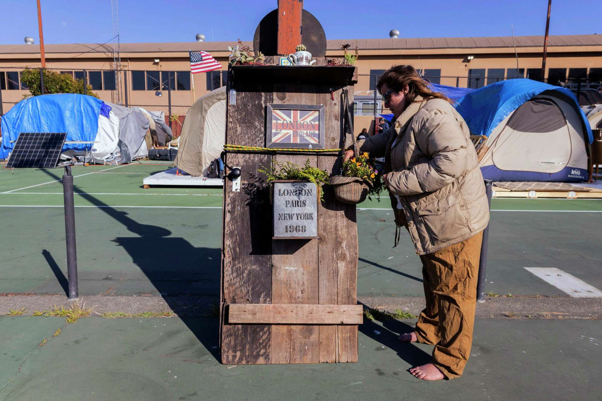

Santiago Mejia, Staff / The Chronicle
Updated: Oct. 29, 2022 2:13 p.m.
All the homes looked the same at the gated community that opened during the pandemic.
Two dozen square foundations plotted in an orderly grid, each with easy access to the waterfront.
Neighbors mingled at a tennis court, caught up over beers and gossiped about who was feuding with whom. Some had workshops to tinker with reclaimed wood or North Bay essentials like generators. At least one person had a meticulously trimmed cannabis plant.
It was just the type of community Sarah Gossage had long sought — a reprieve from a life unsettled after her mother’s sudden death.
“My mom always said, ‘Make it to the end with the best memories,’” Gossage said. “Sausalito is where I like myself the most.”
Vut she knew it wouldn't last
In this gated community, the houses were tents bought with taxpayer money. Neighbors who paid property taxes wanted back the public tennis courts transformed into a COVID-era tent city. Local officials grew impatient with a situation that would soon unravel.
Approximately 100 boats were anchored out in Richardson Bay off of Sausalito in November 2018. Those numbers have dropped in recent years.
Santiago Mejia, Staff / The Chronicle